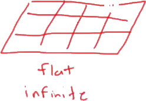
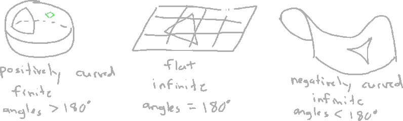

The Big Bang: The Shape of the Universe
The following is a summary of a lecture video. You may click on the '+' buttons next to the figures in order to expand further details.
+

In the last video, we considered some of the assumptions that are made when we consider the Big Bang theory.
There are two key assumptions.
The first is the cosmological principle which says that on large enough scales the universe is both homogeneous, which means it looks the same at all points, and isotropic, so there's no special directions in the universe.
Our second assumption was that all of the laws of physics that we have studied and come to understand are valid everywhere in the universe.
For the purposes of studying the Big Bang, probably the most important law of physics is general relativity.
General relativity is Einstein's theory of gravity.
But instead of describing gravity as a pulling force, Einstein describes gravity as the effect of matter and energy actually curving spacetime.
When you have a curved spacetime, the curvature of that spacetime will actually tell matter and energy how to move and how to flow.
In this picture, one of the most important things is that space is not just some fixed background that matter and energy move around on, rather spacetime will actually take a dynamical role and evolve right along with matter and energy as the universe evolves.
It's going to be very important for us to understand the geometry of this spacetime.
A good place to start from here is saying, \ if the geometry of space is gonna be so important, what kinds of geometries can I have that satisfy the cosmological principle?
+

What kind of geometries can I have that are both homogeneous and isotropic?\
For the purposes of simplicity, we're just going to start by considering some two-dimensional surfaces, two-dimensional spaces.
By considering these spaces, we'll learn the general properties that some of these different geometries can have.
They have very analogous cases to three-dimensional spaces.
We know our universe has three dimensions.
But the lessons we learn looking at two-dimensional spaces will follow right through to the 3D case.
+

The first type of space that we can have is probably one that we're most comfortable with the idea of just, say, an infinite flat plane.

Let's just say I have some plane that extends in all directions.
All of the rules of geometry that we've learned in grade school still apply.
If I draw, say, a triangle on this space, then the angles of that triangle will add up to 180 degrees.
This is a rule that we've probably all learned in public school and, hopefully, familiar to most.
It still applies in this case.
We notice that this space, if it's infinite in extent, is homogeneous, there's no special points on here and it's isotropic there's no special directions.
This isn't the only kind of space that we could have.
For example, we could consider the surface of a sphere, so let's draw a sphere.
This space will have different geometric properties.
We would say that this space is positively curved.
We notice that this space is actually a finite space.
There's only so much area it has, so it's finite.
But, even though it's a finite space, it still has no edge to it.
If I were a two-dimensional person living on this two-dimensional surface, I could walk around and around and never come into any boundary or anything.
If I look at my general rules of geometry, if I make a triangle on this curved surface, the triangle might look something like this.
This triangle where each of these lines are following straight lines on this curved space, if I sum up the angles that this triangle makes, then the angles will actually sum up to more than 180 degrees.
It's a very different kind of geometry than the flat geometry we're used to.
However, this geometry is still homogeneous and isotropic.
If I'm living on this surface, there's no special points, and there's no special direction.
It still satisfies the cosmological principle.
There's another type of space that I can have.
That is a negatively curved space.
This one is kind of difficult to draw, so let's see how I do with this.
It kind of looks like this shape of a saddle.
We have this saddle shape, and we say this has negative curvature, negatively curved.
This space, like the plane, would be infinite in size.
It would extend in these directions out as far as you want to go.
But when I look at a triangle on this shape, following straight lines on this curved space, the triangle might look something like this.
The angles of that triangle would add up to less than 180 degrees.
Again, we have a different type of geometry.
But this geometry is also going to be homogeneous and isotropic.
+

It's still a valid possibility for the shape of our universe.
There are other geometries that are out there, that could exist.
For instance, instead of a sphere, I could have some sort of egg shape.
But we notice, when looking at this egg shape, that the curvature at the very top of the egg is going to be different than the curvature on the side of the egg.
The side of the egg is much more flat than the very tip of it.
That means these two points are going to be different.
That goes against our cosmological principle.
This space would not be homogeneous anymore.
There are differences between those spaces.
Even though we could have other geometries, these are the only three kinds of geometries that we can have for the universe that are both homogeneous and isotropic.
In order to identify which of these shapes actually describes our universe, we're ultimately going to have to go and measure something to identify which type it is.
But we'll talk about that sort of thing later.
Now, looking at these two curved geometries, you might be saying, \ these can't actually describe what the universe looks like.
I can, you know, get two friends and a couple of pieces of string and, and go out and form a triangle, and measure the angles in that triangle.
And I notice that they'll add up to 180 degrees, like the flat plane.
So, so this must be unambiguously what the shape of our universe is.\
My response to that would be, \ you look at this, um, at this surface of, for instance, this sphere on very, very small spaces, on very small scales, then this little patch will appear to be almost flat for the same reason that people for hundreds of years thought that the Earth was flat.\

If you're only looking on small scales, the surface of the Earth seems flat.
It's only when you kind of look on larger scales that you realize that the Earth is actually round.
For all of these surfaces, if you look on small enough scales, it will appear flat.
But with modern technology and modern telescopes, we're actually able to see far enough to begin to test the kind of large-scale properties of the geometry of our universe.
If this kind of length scale is on the order of billions of light years, then looking on scales like the Earth and the solar system, you're not going to be able to notice the curvature of space on those scales.
When working with these curved spaces, there's something that's very, very important to note and is a source of a lot of confusion when it comes to talking about the geometry of the early universe.
That is the idea of, when I draw this picture just for kind of simplicity and, and our understanding of this geometry, I draw it as the two-dimensional surface of a three-dimensional sphere.
The truth is that if I have this two-dimensional space, I can completely describe that two-dimensional space using only the properties on that surface without ever having to refer to some third dimension, the volume of this object, or anything else.
It can be completely on its own a perfectly valid two-dimensional space.
It's actually fairly easy to describe mathematically.
Same with this other curved geometry.
I can completely describe that without ever referring to any higher dimensional space.
+

When we start talking about the universe expanding and contracting, what we're talking about is, \ have this homogeneous and isotropic geometry, and maybe that geometry starts small.
And then that geometry expands into some, into some what we would call a larger geometry.\
There's more surface area here than there is here.
But what people often want to say is that there is some higher dimensional space that this object, that this surface is expanding into.
But I can describe all of the geometry completely staying on this surface, without ever leaving this surface.
A higher dimension does not have to exist in order for this to be a consistent theory.
When we talk more about the expansion of the universe, this is the kind of expansion that we're talking about, this geometry of space itself changing.
If I have, say, two points on this surface, here, let's see if I can get a bit brighter color then, as this space expands, these two points will appear to be farther apart.
It will take longer for light to bounce back and forth.
This doesn't just happen for curved geometries.
I can have this flat geometry starting in a somewhat kind of compressed state, you can say.
These two points start close together.
Then it takes light a certain amount of time to bounce between those.
But that geometry, through general relativity, because we said that according to general relativity spacetime can actually evolve and change based on the matter and energy that's in it this space can actually expand.
These two points will be moved farther away from each other.
It will take light a longer amount of time to travel between those two points.
But one of the important things to note when we're considering these expanding geometries is that we do not need to have some higher dimension that this thing is expanding into.
We don't have compressed matter and empty space outside that this is expanding into.
We can completely describe this simply as, \ geometry of this space is changing\ only using quantities that are on that geometry, not anywhere else out here.
When people sometimes say that the universe is expanding into something, that's like saying, \ have a, a burrow that has a certain amount of temperature, and that temperature is, is increasing.
And what is that temperature increasing into?\
When we talk about it that way, this question of, \ is the universe expanding into?\
just doesn't make sense anymore.
That's a very important point that I really want to emphasize.
There does not have to be some higher dimensional space that this is expanding into.
We'll talk a little bit more about how the universe expands and what sort of effects the expansion of the universe has in future videos.